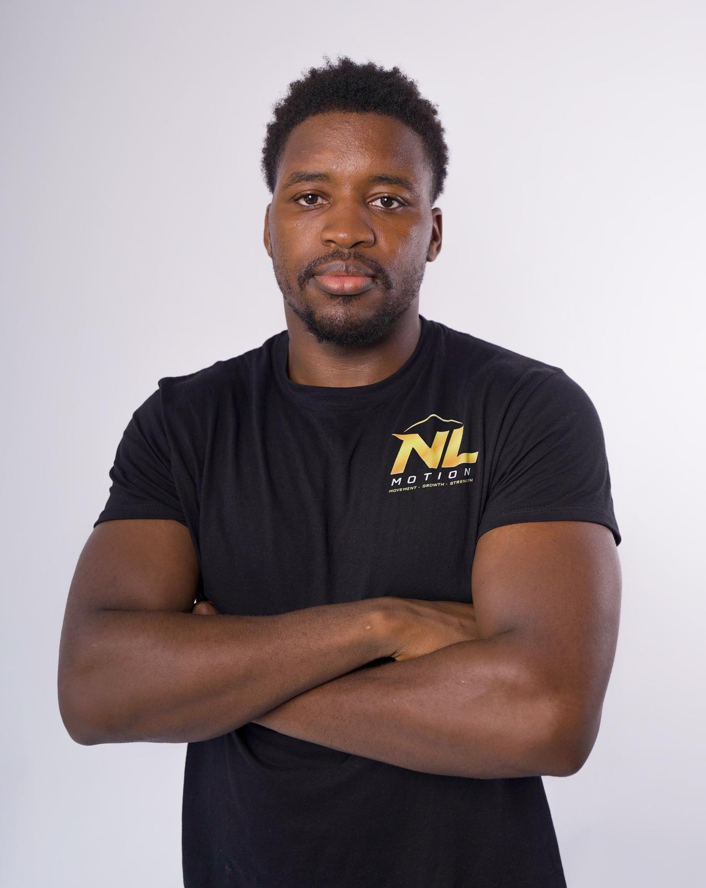
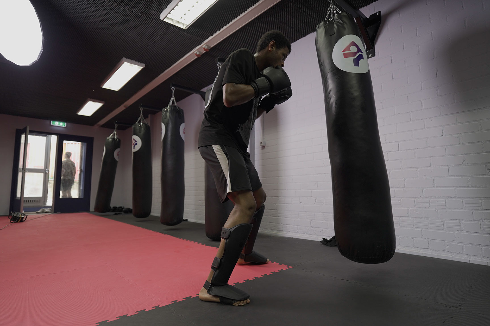
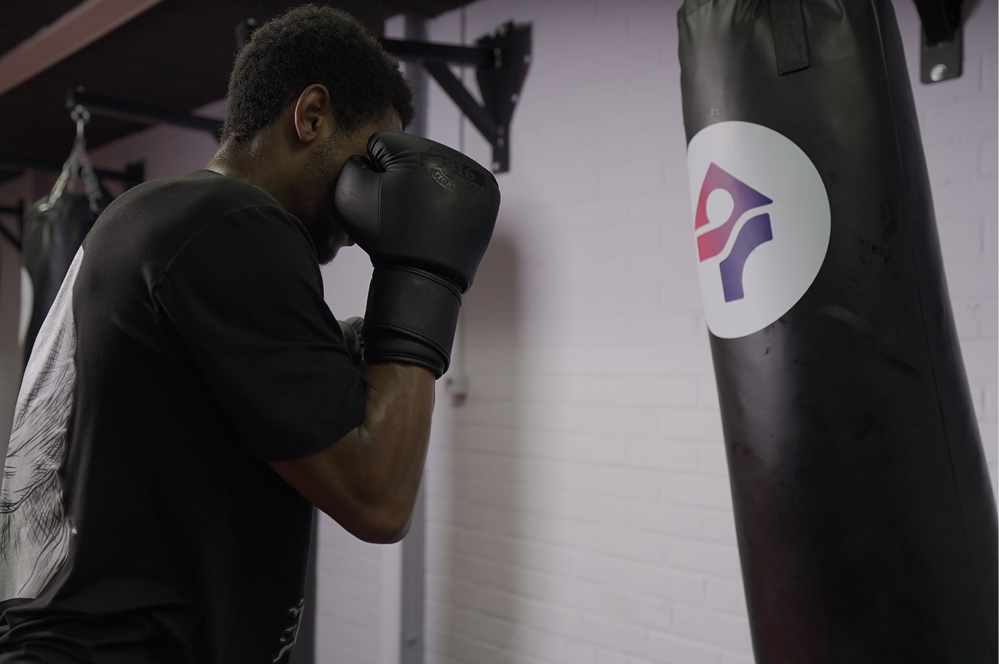
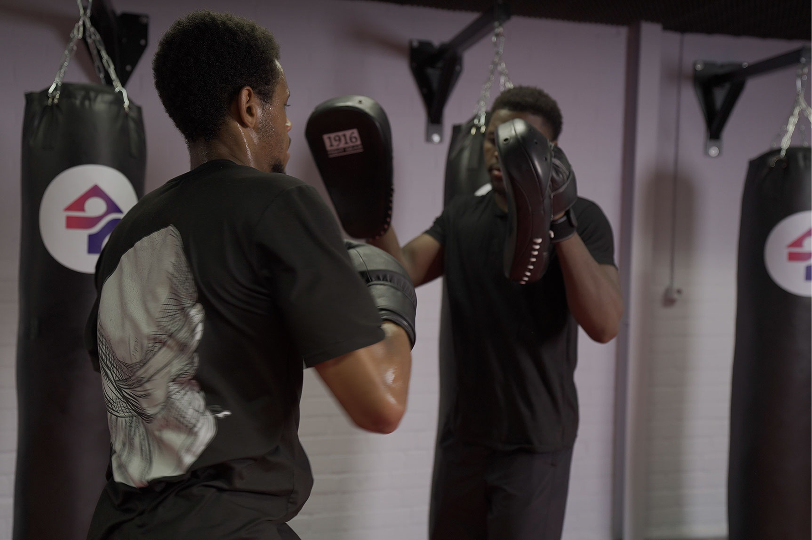
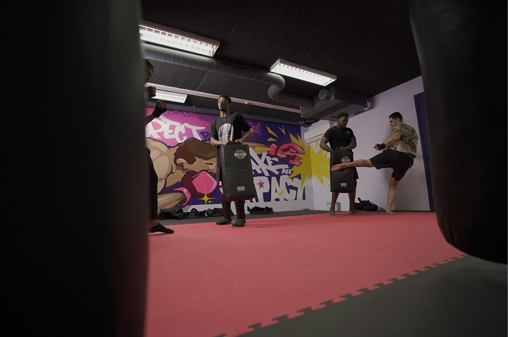

Over ons
Van de ring naar de
begeleiding van jongeren.
Nathan groeide op met vechtsport en maakte er zijn vak van. Tien jaar training, wedstrijden op niveau en de discipline die daarbij hoort, vormden de basis voor alles wat hij nu doet.
Onderweg zag hij hoeveel jongeren dezelfde energie hebben, maar niet dezelfde plek om die kwijt te kunnen. Jongeren die vastlopen in trajecten, afhaken bij gesprekken en pas openbloeien zodra ze iets te doen krijgen. Daar ontstond de vraag die NL Motion werd.
Vandaag combineert hij de wedstrijdvechter en de zorgprofessional in één aanpak. De jongere is de held van het verhaal, en Nathan de begeleider die naast hem staat terwijl hij groeit.
De missie
Beweging als middel, ontwikkeling als doel.
NL Motion bestaat omdat beweging jongeren iets geeft wat een spreekkamer vaak niet lukt. Tijdens het trainen ontstaat vertrouwen, komt een gesprek vanzelf op gang en bouwt een jongere iets op waar hij trots op is.
Beweging is daarbij nooit het doel. Het is het middel om te werken aan zelfvertrouwen, discipline en weerbaarheid, en om een jongere stap voor stap verder te helpen.
Ervaring
De feiten op een rij.
- 10 jaar
- Actief in de vechtsport, van fundament tot wedstrijdniveau.
- Wedstrijden
- Actief wedstrijdvechter, nog altijd zelf in training.
- Zorg
- Zorgprofessional met dagelijkse ervaring in het werken met jongeren.
- VOG en registraties
- Geldige VOG en ingeschreven bij de KvK als NL Motion.
- Samenwerkingen
- Gemeente Arnhem, Intego Zorg, NewFuture Zorg en PowerPluk.
In beeld
Intensiteit en verbinding, naast elkaar.




Plan een kennismaking met Nathan.
Een kennismakingsgesprek kost niets en geeft direct duidelijkheid over wat er mogelijk is voor jouw organisatie of jongere.